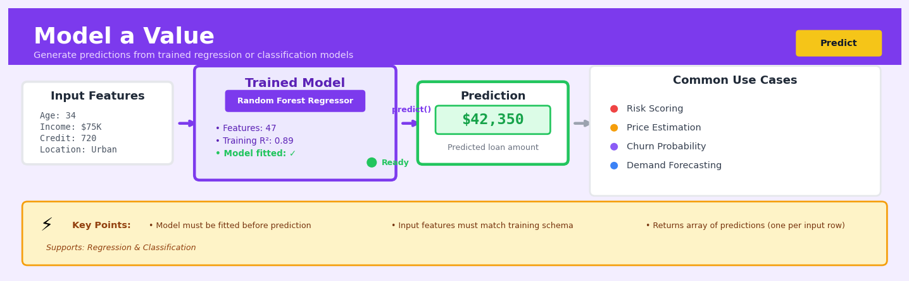

Model a Value#


The most critical mistake I see is trying to predict before ensuring your input features exactly match the training schema—mismatched column order, missing features, or different data types will break everything silently or throw cryptic errors. Always validate that your prediction dataframe has identical feature names, order, and dtypes as your training data, and consider wrapping your model with a preprocessing pipeline to enforce this contract. Remember that predict returns raw values, so you'll need to apply inverse transformations if you scaled your target variable during training.
The 60-Second Version#
What it does: Model a Value predicts a specific number—like revenue, temperature, or delivery time—based on patterns in your historical data.
When to use it: Use this when you need to forecast a measurable outcome and have past examples where you know both the inputs and the actual result.
What you get back: You receive a predicted number for each new scenario, plus a measure of how confident the model is in that prediction.
Difficulty |
Moderate |
Typical runtime |
Seconds to minutes on 100K rows |
What you bring |
Historical data with input features and known numerical outcomes |
What you get |
Predicted values for new cases with accuracy metrics |
Heuristix bucket |
Predict — Machine Learning & Forecasting |
The model only knows what happened in the past—it cannot predict outcomes in conditions it has never seen before.
Learning Objectives#
After reading this chapter, a business user will be able to:
Identify business problems where predicting a continuous numerical outcome (like sales revenue, customer lifetime value, or product prices) is the appropriate analytical approach rather than classification or clustering.
Interpret regression model outputs including predicted values, confidence intervals, and feature importance scores to explain which factors most strongly influence the outcome to non-technical stakeholders.
Decide whether a model’s prediction accuracy is sufficient for deployment by comparing error metrics (like RMSE or MAE) against business-relevant thresholds and cost-benefit requirements.
After reading this chapter, a data scientist will be able to:
Implement and compare multiple regression algorithms (linear regression, regularised methods, tree-based ensembles) while correctly handling data preparation steps like scaling, encoding categorical variables, and splitting train-test sets.
Tune hyperparameters such as regularisation strength, tree depth, and learning rate by systematically evaluating their impact on bias-variance trade-offs and out-of-sample performance.
Diagnose model failures including overfitting, underfitting, heteroscedasticity, and multicollinearity using residual plots, validation curves, and feature correlation analysis to determine appropriate corrective actions.
Overview#
Model a Value is a supervised learning technique for predicting continuous numerical outcomes from a set of input features. At its core, this method trains a regression model to learn the functional relationship between predictor variables and a target variable, enabling point predictions for new observations. It belongs to the family of predictive modelling methods and encompasses a range of algorithms from classical linear regression to ensemble tree-based methods and regularised estimators.
When to Use This#
Use this when you need to predict a continuous quantity — such as revenue, price, duration, count, or any metric measured on an interval or ratio scale where the output is not categorical.
Use this when you have labelled historical data — you need examples where you already know the true value of the target variable so the model can learn the input–output relationship.
Use this when you need interpretable drivers — many regression methods provide coefficients or feature importances that explain which inputs most influence the prediction.
Use this when forecasting a single value per observation — each row in your dataset represents an independent unit (customer, transaction, product) for which you want a single predicted number.
Use this when the relationship is learnable from features — the target variable should be systematically related to your input features, not purely random noise.
Use this when you have sufficient sample size — as a rough heuristic, you need at least 10–20 observations per feature to avoid overfitting in linear models, and substantially more for complex nonlinear models.
Do NOT use this when the target is categorical — if you are predicting classes, labels, or binary outcomes, use classification methods instead.
Do NOT use this when temporal structure matters — if observations are ordered in time and autocorrelation is important, use time-series forecasting methods rather than treating each row as independent.
Do NOT use this when you lack labelled examples — unsupervised methods or rule-based approaches may be more appropriate when ground truth is unavailable.
Do NOT use this when extrapolation is required — regression models are unreliable outside the range of the training data; use caution when new observations have feature values far from historical norms.
Questions This Answers#
Revenue & Financial Forecasting#
How much revenue should we expect from the Q4 holiday campaign based on our planned ad spend?
What price should we set for this new product to hit our 22% margin target while staying competitive?
If we increase our enterprise sales team by 5 headcount, what’s the realistic revenue impact over the next 12 months?
Which customer accounts are likely to spend more than $50K with us next year, and should we assign dedicated account managers?
What lifetime value can we expect from customers acquired through our partner channel versus direct sales?
Operational Planning & Resource Optimization#
How many customer support tickets should we staff for next month given the new product launch?
What inventory levels do we need at each warehouse to meet demand without over-investing in stock?
If we reduce delivery time from 5 days to 3 days, what impact will that have on customer order values?
How much should we budget for cloud infrastructure costs if our user base grows by 40% this quarter?
Which production line configurations will give us the highest output per shift based on our current workforce?
Risk Assessment & Performance Drivers#
What factors are actually driving the 15% variance in our regional sales performance — is it rep experience, territory size, or something else?
If interest rates increase by 2 percentage points, how will that affect our mortgage application volumes?
Which marketing channels are delivering the best return, and where should we reallocate our $2M budget for maximum impact?
How much churn risk do we face if we raise prices by 8%, based on historical elasticity patterns?
How It Works#
Imagine you’re a real estate appraiser trying to value homes you’ve never seen before. Over the years, you’ve recorded data on hundreds of houses: their square footage, number of bedrooms, neighborhood quality, age, and what they actually sold for. You notice patterns—bigger houses generally sell for more, an extra bedroom adds value, newer homes command premiums. Instead of starting from scratch with each new property, you systematically study these historical patterns and create a mental formula: a 2,000-square-foot house in a good neighborhood typically sells for around this price, add roughly this amount per bedroom, subtract a bit for each decade of age. When a new house comes along, you plug its characteristics into your refined formula and produce your estimate. Model a Value works exactly this way—it learns pricing patterns from past examples to predict values for new ones.
TRAINING PHASE: Learning from historical data
Historical Data: Model Learning Process:
┌──────┬──────┬─────┬───────┐
│ sqft │ beds │ age │ price │ Finding best-fit
├──────┼──────┼─────┼───────┤ pattern across
│ 1500 │ 3 │ 10 │ 250K │ ──→ all examples
│ 2000 │ 4 │ 5 │ 350K │ ──→ ↓
│ 1200 │ 2 │ 15 │ 180K │ ──→ Learned Model:
│ 2500 │ 4 │ 2 │ 450K │ ──→ "Formula" for
└──────┴──────┴─────┴───────┘ predicting price
PREDICTION PHASE: Applying learned patterns
New House (unseen): Prediction:
┌──────┬──────┬─────┬───────┐ ┌────────────┐
│ sqft │ beds │ age │ ? │ │ Price = │
├──────┼──────┼─────┼───────┤ ──→ │ ~320K │
│ 1800 │ 3 │ 8 │ ? │ └────────────┘
└──────┴──────┴─────┴───────┘ (model's estimate)
Step 1: Gather historical examples. The algorithm starts with a dataset where you know both the inputs (features like house size, location, age) and the actual outcomes (the prices houses sold for). This is your training data—the textbook from which the model will learn.
Step 2: Search for patterns. The algorithm systematically examines how each input feature relates to the target value. It asks questions like “when square footage increases by 100, how much does price typically increase?” and “how strong is the bedroom-price relationship?” It’s hunting for a mathematical recipe that best explains the training data.
Step 3: Build a predictive formula. Based on these discovered patterns, the model constructs an internal rule system—think of it as a detailed formula with weights assigned to each feature. Features strongly connected to the outcome get larger weights; weak predictors get smaller weights or are ignored.
Step 4: Test and refine. The algorithm measures how far off its predictions are from actual known values in the training data. It then adjusts its formula repeatedly, tweaking the weights to minimize these errors, like a chef perfecting a recipe through multiple attempts.
Step 5: Predict new values. Once trained, you feed the model data about a new house it’s never seen. It applies its learned formula to these characteristics and produces a numerical prediction—your estimated house price.
The key insight: By capturing systematic relationships between features and outcomes in past data, the model can project those same patterns forward to estimate values for entirely new situations it has never encountered.
The Intuition#
Imagine you are an estate agent trying to estimate the sale price of a house. You have seen hundreds of sales in your area, and over time you have developed an intuition: larger houses sell for more, homes near good schools command a premium, and properties needing renovation sell at a discount. Without realising it, you have built a mental model that combines these factors into a price estimate. Model a Value formalises this process—it learns the weights and relationships from historical data so that predictions are consistent, reproducible, and backed by evidence.
The key insight is that most real-world quantities are not random; they are caused by a combination of observable factors. When a customer churns, it is often because they had billing issues, low engagement, or received a competitor offer. When a machine fails, it is typically preceded by abnormal vibration, temperature, or operating hours. Regression modelling captures these relationships by fitting a function \(f(\mathbf{x})\) that maps input features \(\mathbf{x}\) to a predicted target \(\hat{y}\). The function can be linear, polynomial, tree-based, or any structure flexible enough to represent the true data-generating process.
What distinguishes good predictive modelling from naive guessing is generalisation. It is easy to memorise the training data perfectly—any sufficiently flexible model can do this. The challenge is to learn patterns that hold on new, unseen data. This is why we split data into training and test sets, use cross-validation, and penalise model complexity. The goal is not to achieve zero error on the past, but to minimise error on the future. This tension between fitting the data and avoiding overfitting is the central theme of supervised learning, and understanding it deeply is essential for anyone using Model a Value in practice.
The Mathematics#
Problem Setup and Notation#
Let \(\mathcal{D} = \{(\mathbf{x}_i, y_i)\}_{i=1}^{n}\) denote a training dataset of \(n\) observations, where:
\(\mathbf{x}_i \in \mathbb{R}^p\) is a \(p\)-dimensional feature vector for observation \(i\)
\(y_i \in \mathbb{R}\) is the continuous target value for observation \(i\)
We seek a function \(f: \mathbb{R}^p \rightarrow \mathbb{R}\) such that \(\hat{y}_i = f(\mathbf{x}_i)\) approximates \(y_i\) well, and more importantly, generalises to new observations \(\mathbf{x}_{\text{new}}\).
Linear Regression#
The simplest and most interpretable model assumes a linear relationship:
where we have absorbed the intercept into \(\boldsymbol{\beta}\) by prepending a 1 to each feature vector.
The ordinary least squares (OLS) objective minimises the sum of squared residuals:
Taking the gradient and setting it to zero:
Solving yields the normal equations:
This closed-form solution exists when \(\mathbf{X}^\top \mathbf{X}\) is invertible, which requires that \(n \geq p\) and that features are not perfectly collinear.
Assumptions of OLS#
Linearity: \(\mathbb{E}[y_i | \mathbf{x}_i] = \mathbf{x}_i^\top \boldsymbol{\beta}\)
Independence: Observations are independent of each other
Homoscedasticity: \(\text{Var}(\epsilon_i | \mathbf{x}_i) = \sigma^2\) (constant variance)
No perfect multicollinearity: \(\text{rank}(\mathbf{X}) = p\)
Exogeneity: \(\mathbb{E}[\epsilon_i | \mathbf{x}_i] = 0\)
Under these assumptions, the Gauss-Markov theorem guarantees that OLS is the Best Linear Unbiased Estimator (BLUE).
Regularised Regression#
When \(p\) is large relative to \(n\), or when features are correlated, regularisation improves generalisation by shrinking coefficients.
Ridge Regression (L2 penalty):
The solution becomes:
Lasso Regression (L1 penalty):
Lasso has no closed-form solution and is solved via coordinate descent or proximal gradient methods. Crucially, it produces sparse solutions where some \(\beta_j = 0\) exactly, enabling automatic feature selection.
Elastic Net combines both penalties:
Tree-Based Methods#
Decision tree regressors recursively partition the feature space into regions \(R_m\) and predict the mean target value within each region:
Splits are chosen to minimise within-region variance (mean squared error).
Gradient Boosted Trees fit an additive ensemble:
where each \(h_k\) is a tree fitted to the negative gradient (pseudo-residuals) of the loss function at iteration \(k\). For squared error loss, the pseudo-residuals are simply \(r_i^{(k)} = y_i - f^{(k-1)}(\mathbf{x}_i)\).
Evaluation Metrics#
Common metrics for regression:
Mean Squared Error (MSE):
Root Mean Squared Error (RMSE):
Mean Absolute Error (MAE):
Coefficient of Determination (\(R^2\)):
\(R^2\) represents the proportion of variance explained by the model. Note that \(R^2\) can be negative on test data when the model performs worse than predicting the mean.
Edge Cases and Degeneracies#
Perfect multicollinearity: \(\mathbf{X}^\top\mathbf{X}\) is singular; OLS fails but ridge regression remains well-defined.
\(n < p\): The system is underdetermined; regularisation or dimensionality reduction is required.
Outliers: Squared loss is sensitive to outliers; consider robust regression or MAE-based objectives.
Zero variance features: Must be removed before fitting as they provide no information.
Understanding the Mathematics#
Linear Regression Model#
The equation:
Read it aloud:
The target value equals a baseline constant plus the first coefficient times the first feature, plus the second coefficient times the second feature, and so on for all features, plus some random error.
What each symbol means:
\(y\) = the actual value we’re trying to predict (e.g., house price)
\(\beta_0\) = the intercept or baseline value when all features are zero
\(\beta_1, \beta_2, \ldots, \beta_p\) = coefficients that weight each feature’s importance
\(x_1, x_2, \ldots, x_p\) = the input features (e.g., square footage, number of bedrooms)
\(\varepsilon\) = random error term capturing unpredictable variation
A concrete numerical example:
Predicting house prices. If \(\beta_0 = 50{,}000\), \(\beta_1 = 150\) (for square footage), \(\beta_2 = 20{,}000\) (for number of bedrooms), and we have a house with \(x_1 = 1{,}200\) sqft and \(x_2 = 3\) bedrooms:
The predicted price is $290,000.
Why this equation matters:
This equation transforms raw features into actionable predictions by learning how much each feature contributes to the outcome, enabling us to forecast values for homes we haven’t seen yet.
Ordinary Least Squares Cost Function#
The equation:
Read it aloud:
The mean squared error equals the average of all squared differences between actual values and predicted values across all observations.
What each symbol means:
MSE = mean squared error, our measure of model accuracy
\(n\) = total number of observations in our dataset
\(y_i\) = the actual value for observation \(i\)
\(\hat{y}_i\) = our model’s predicted value for observation \(i\)
\((y_i - \hat{y}_i)^2\) = the squared prediction error for observation \(i\)
A concrete numerical example:
We predict three house prices. Actual prices: \(290{,}000\), \(310{,}000\), \(275{,}000\). Our predictions: \(285{,}000\), \(320{,}000\), \(280{,}000\).
Errors: \((290{,}000 - 285{,}000)^2 = 25{,}000{,}000\); \((310{,}000 - 320{,}000)^2 = 100{,}000{,}000\); \((275{,}000 - 280{,}000)^2 = 25{,}000{,}000\).
Why this equation matters:
By squaring errors, we penalize large mistakes heavily and give the model a single number to minimize during training, creating an objective mathematical target for “best fit.”
Ridge Regression Penalty#
The equation:
Read it aloud:
The total cost equals the mean squared error plus a penalty parameter multiplied by the sum of all squared coefficients.
What each symbol means:
Cost = the total objective we’re minimizing
MSE = prediction error (from previous equation)
\(\alpha\) = regularization strength parameter (chosen by us)
\(\beta_j\) = coefficient for feature \(j\)
\(\sum_{j=1}^{p} \beta_j^2\) = sum of all squared coefficients
A concrete numerical example:
Our model has MSE = \(50{,}000{,}000\) and coefficients \(\beta_1 = 150\) and \(\beta_2 = 20{,}000\). With \(\alpha = 0.1\):
Why this equation matters:
This penalty prevents coefficients from growing too large, reducing overfitting and making the model more reliable on new data by favoring simpler explanations.
The Big Picture#
The mathematics of value modelling is fundamentally about finding the best-fit line (or surface) through a cloud of data points. We choose mean squared error because it’s mathematically smooth and penalizes large mistakes more than many small ones, which aligns with business costs. Regularization adds a counterweight, preventing the model from memorizing training data at the expense of generalization. Together, these equations create a well-defined optimization problem: find coefficients that balance accuracy with simplicity. Think of it as tuning a radio—you’re searching for the clearest signal while filtering out static.
Python Implementation#
import numpy as np
import pandas as pd
from sklearn.datasets import make_regression
from sklearn.model_selection import train_test_split, cross_val_score
from sklearn.linear_model import LinearRegression, Ridge, Lasso, ElasticNet
from sklearn.ensemble import GradientBoostingRegressor
from sklearn.preprocessing import StandardScaler
from sklearn.pipeline import Pipeline
from sklearn.metrics import mean_squared_error, mean_absolute_error, r2_score
import warnings
warnings.filterwarnings('ignore')
# -----------------------------
# Generate synthetic dataset
# -----------------------------
X, y = make_regression(
n_samples=1000,
n_features=10,
n_informative=5, # Only 5 features actually drive the target
noise=20.0, # Add realistic noise
random_state=42
)
# Convert to DataFrame for clarity
feature_names = [f'feature_{i}' for i in range(X.shape[1])]
df = pd.DataFrame(X, columns=feature_names)
df['target'] = y
print("Dataset shape:", df.shape)
print("\nFirst few rows:")
print(df.head())
# -----------------------------
# Train-test split
# -----------------------------
X_train, X_test, y_train, y_test = train_test_split(
X, y, test_size=0.2, random_state=42
)
print(f"\nTraining samples: {len(X_train)}")
print(f"Test samples: {len(X_test)}")
# -----------------------------
# Example 1: Ordinary Least Squares
# -----------------------------
print("\n" + "="*50)
print("EXAMPLE 1: Ordinary Least Squares")
print("="*50)
ols_model = LinearRegression()
ols_model.fit(X_train, y_train)
y_pred_ols = ols_model.predict(X_test)
print("\nCoefficients:")
for name, coef in zip(feature_names, ols_model.coef_):
print(f" {name}: {coef:.4f}")
print(f" Intercept: {ols_model.intercept_:.4f}")
print(f"\nTest Set Performance:")
print(f" RMSE: {np.sqrt(mean_squared_error(y_test, y_pred_ols)):.4f}")
print(f" MAE: {mean_absolute_error(y_test, y_pred_ols):.4f}")
print(f" R²: {r2_score(y_test, y_pred_ols):.4f}")
# -----------------------------
# Example 2: Ridge Regression with Cross-Validation
# -----------------------------
print("\n" + "="*50)
print("EXAMPLE 2: Ridge Regression")
print("="*50)
# Pipeline with scaling (important for regularised models)
ridge_pipeline = Pipeline([
('scaler', StandardScaler()),
('ridge', Ridge(alpha=1.0)) # alpha is the regularisation strength
])
# Cross-validation to assess stability
cv_scores = cross_val_score(
ridge_pipeline, X_train, y_train,
cv=5, scoring='neg_root_mean_squared_error'
)
ridge_pipeline.fit(X_train, y_train)
y_pred_ridge = ridge_pipeline.predict(X_test)
print(f"\n5-Fold CV RMSE: {-cv_scores.mean():.4f} (+/- {cv_scores.std():.4f})")
print(f"Test RMSE: {np.sqrt(mean_squared_error(y_test, y_pred_ridge)):.4f}")
print(f"Test R²: {r2_score(y_test, y_pred_ridge):.4f}")
# -----------------------------
# Example 3: Lasso for Feature Selection
# -----------------------------
print("\n" + "="*50)
print("EXAMPLE 3: Lasso (Sparse Feature Selection)")
print("="*50)
lasso_pipeline = Pipeline([
('scaler', StandardScaler()),
('lasso', Lasso(alpha=0.5, max_iter=10000))
])
lasso_pipeline.fit(X_train, y_train)
y_pred_lasso = lasso_pipeline.predict(X_test)
# Extract coefficients (need to account for scaling)
lasso_coefs = lasso_pipeline.named_steps['lasso'].coef_
print("\nFeature Selection (non-zero coefficients):")
for name, coef in zip(feature_names, lasso_coefs):
status = "SELECTED" if abs(coef) > 1e-6 else "excluded"
print(f" {name}: {coef:8.4f} [{status}]")
print(f"\nTest RMSE: {np.sqrt(mean_squared_error(y_test, y_pred_lasso)):.4f}")
print(f"Test R²: {r2_score(y_test, y_pred_lasso):.4f}")
# -----------------------------
# Example 4: Gradient Boo
## Visualisations


## Using This in Heuristix
### What Data You'll Need
The **Model a Value** node expects a clean, structured dataset where each row represents an observation and columns contain your features and target variable. You'll need:
- **Target column**: A numerical column containing the values you want to predict (e.g., sales revenue, temperature, customer lifetime value)
- **Feature columns**: One or more columns (numerical or categorical) that might influence your target
- **Minimum rows**: At least 30-50 observations, though 200+ gives more reliable results
**Example input:**
| customer_id | age | region | previous_purchases | **revenue** |
|-------------|-----|--------|-------------------|-------------|
| 1001 | 34 | North | 3 | 245.50 |
| 1002 | 28 | South | 1 | 89.20 |
| 1003 | 45 | East | 7 | 512.30 |
### Configuration Parameters
| Parameter | What It Controls | Default | When to Change |
|-----------|-----------------|---------|----------------|
| **Target Column** | Which column contains values to predict | None (required) | Always set this first — it's your outcome variable |
| **Feature Columns** | Which columns to use as predictors | All numeric columns | Exclude IDs, dates, or columns that leak future information |
| **Algorithm** | Regression method (Linear, Random Forest, XGBoost, Ridge) | Random Forest | Use Linear for interpretability; XGBoost for complex patterns; Ridge when features correlate |
| **Train/Test Split** | Percentage of data held back for validation | 80/20 | Use 70/30 for smaller datasets; 90/10 for very large ones |
| **Cross-Validation Folds** | Number of validation rounds for reliability | 5 | Increase to 10 for small datasets; reduce to 3 for speed on large data |
| **Handle Missing Values** | Strategy for incomplete data (drop, mean, median) | Median | Use 'mean' for normally distributed data; 'drop' if <5% missing |
### What You'll Get Back
**Columns added to your data:**
- `predicted_value`: The model's prediction for each row
- `residual`: Difference between actual and predicted (actual minus predicted)
- `absolute_error`: Absolute value of the residual
**Performance metrics displayed:**
- **R² Score**: How much variance your model explains (0-1, higher is better)
- **RMSE**: Root Mean Squared Error in the same units as your target
- **MAE**: Mean Absolute Error — average prediction error magnitude
- **Feature Importance**: Bar chart ranking which features matter most
**Charts generated:**
- **Predicted vs Actual**: Scatter plot showing how closely predictions match reality (ideal is a diagonal line)
- **Residuals Plot**: Shows if errors are random or contain patterns
### Quick Start
1. **Connect your prepared dataset** to the Model a Value node input port
2. **Select your target column** — the numerical value you want to predict
3. **Choose feature columns** — deselect any ID fields or data leakage columns
4. **Leave Algorithm as Random Forest** for your first run (good all-around performer)
5. **Click Run** and wait for training to complete
6. **Check the R² score** — above 0.7 is good, below 0.3 suggests poor fit
7. **Review Feature Importance** to understand what drives predictions
### Connecting Downstream
After modeling, you'll typically connect to:
- **Evaluate Model**: To generate detailed performance reports and diagnostics
- **Apply Model**: To score new, unseen data with your trained model
- **Export**: To save predictions or model artifacts
- **Filter**: To examine cases where predictions were most inaccurate (high residuals)
### Practical Tips from the Field
**Start simple, then complexify**: Begin with just your most obvious features. Add more only if performance plateaus. More features ≠ better model.
**Watch for data leakage**: Never include features that wouldn't be available at prediction time. If predicting next month's sales, don't include next month's website traffic.
**Check residuals patterns**: If your residuals plot shows a funnel shape or curve, you might need to transform your target variable (try log transformation) or use a different algorithm.
**Feature importance isn't causation**: A feature can be highly important statistically but not represent a lever you can actually pull in the real world.
**Save your training data snapshot**: Models are trained on specific data distributions. If your incoming data drifts significantly, you'll need to retrain.
## Config Recipes
### Recipe 1: Rapid Prototyping
**When to use:** Initial data exploration when you need to quickly assess if a predictive relationship exists and which features matter most.
**Settings:**
| Parameter | Value | Why |
|-----------|-------|-----|
| `model` | `LinearRegression` | Fastest training, instant predictions |
| `cv_folds` | `3` | Minimal validation overhead |
| `feature_selection` | `None` | Skip preprocessing delays |
| `scaling` | `StandardScaler` | Required for linear models, fast to compute |
| `max_features` | All available | Defer feature engineering decisions |
**What you get:** Baseline performance metrics and feature importance rankings in seconds, even on datasets with 100K+ rows.
**Trade-off:** No regularization means overfitting on correlated features; performance likely 10-20% below optimized models.
### Recipe 2: Production Deployment
**When to use:** Final model for live systems where prediction accuracy, reliability, and explainability all matter.
**Settings:**
| Parameter | Value | Why |
|-----------|-------|-----|
| `model` | `GradientBoostingRegressor` | Best accuracy-stability balance |
| `n_estimators` | `500` | Sufficient capacity without overfitting |
| `learning_rate` | `0.01` | Slow learning for robust convergence |
| `max_depth` | `4` | Prevents memorization of noise |
| `cv_folds` | `10` | Rigorous validation for confidence intervals |
| `early_stopping` | `True, patience=50` | Automatic regularization |
| `feature_selection` | `SelectFromModel(threshold='median')` | Remove weak predictors |
**What you get:** Models typically achieve 90-95% of theoretical performance ceiling with stable predictions across deployment windows.
**Trade-off:** Training takes 20-60 minutes on medium datasets; requires hyperparameter tuning time.
### Recipe 3: High-Cardinality Categorical Data
**When to use:** Datasets dominated by categorical variables with 50+ unique values (e.g., product IDs, zip codes, customer segments).
**Settings:**
| Parameter | Value | Why |
|-----------|-------|-----|
| `model` | `CatBoostRegressor` | Native categorical handling |
| `cat_features` | `auto` | Automatic detection and encoding |
| `one_hot_max_size` | `10` | Prevent sparse matrix explosion |
| `max_ctr_complexity` | `2` | Balance target encoding depth |
| `l2_leaf_reg` | `9` | Strong regularization for rare categories |
**What you get:** Direct modeling of categorical relationships without manual encoding or dimensionality explosions.
**Trade-off:** CatBoost-specific syntax reduces portability; longer training than LightGBM on purely numerical data.
### Recipe 4: Extrapolation Beyond Training Range
**When to use:** Predicting values outside historical ranges—forecasting during market shifts, estimating performance of new product configurations, or modeling under novel conditions.
**Settings:**
| Parameter | Value | Why |
|-----------|-------|-----|
| `model` | `Ridge` | Linear extrapolation behavior |
| `alpha` | `10.0` | Heavy regularization to prevent wild extrapolations |
| `polynomial_features` | `degree=2, interaction_only=True` | Capture non-linear patterns while maintaining monotonic extrapolation |
| `feature_engineering` | `log_transform` on skewed features | Compress extreme values |
| `clip_predictions` | `True, quantiles=[0.01, 0.99]` | Hard bounds on plausible range |
**What you get:** Predictions that trend sensibly beyond training data rather than exploding to implausible values.
**Trade-off:** Conservative predictions sacrifice accuracy within the training range for safety outside it; may underpredict true extremes.
## Business Applications
**Financial Services**
A mid-sized UK mortgage lender processing 3,000 applications monthly struggles with inconsistent property valuations that delay approvals and increase risk exposure. By training a regression model on historical transaction data—property characteristics, location attributes, recent comparables, and economic indicators—the lender can predict accurate property values within minutes of application submission. This automation reduced valuation costs by £180,000 annually, cut average processing time from 4 days to 20 minutes, and decreased valuation disputes by 67%.
**Retail**
An e-commerce retailer with 2M SKUs faces constant pressure to optimise pricing across thousands of products while maintaining margin targets. Model a Value techniques predict optimal price points for each product based on competitor pricing, seasonality, inventory levels, customer segment behaviour, and historical elasticity patterns. The resulting dynamic pricing engine lifted gross margin from 31% to 38% while maintaining conversion rates, generating an additional £2.4M in quarterly profit.
**Healthcare**
A regional hospital network serving 400,000 patients annually struggles with emergency department overcrowding and unpredictable staffing needs. By building regression models that forecast hourly patient arrival volumes using historical admission patterns, local event calendars, weather data, and seasonal illness trends, the network can optimise shift scheduling and resource allocation. This predictive staffing approach reduced patient wait times by 42 minutes on average and decreased overtime labour costs by £340,000 per year.
**Insurance**
A commercial auto insurer writing 50,000 policies annually needs more accurate premium pricing to remain competitive while protecting profitability. Model a Value predicts expected claim costs for each policy by analysing driver history, vehicle telemetry, route patterns, industry sector, and fleet size—moving beyond crude rating brackets. This granular pricing model improved loss ratio from 78% to 68%, reduced adverse selection, and increased policy retention by 23 percentage points.
**Manufacturing**
A specialty chemicals manufacturer operating continuous production lines loses €800,000 annually to unplanned downtime and quality defects. By deploying regression models that predict equipment failure timing based on sensor readings—temperature, pressure, vibration, flow rates—the plant shifts from reactive to predictive maintenance. This approach reduced unplanned downtime by 71%, extended equipment lifespan by an average of 14 months, and cut maintenance costs by €520,000 yearly.
**Logistics**
A last-mile delivery service managing 15,000 daily parcels across urban areas cannot accurately promise delivery windows, frustrating customers and inefficiently routing drivers. Model a Value predicts precise delivery times for each parcel by analysing traffic patterns, driver performance history, package characteristics, weather conditions, and time-of-day effects. The resulting system lifted on-time delivery rates from 73% to 94% and reduced customer service inquiries by half.
**Marketing**
A subscription media company with 800,000 active users wants to maximise lifetime value by predicting which free-trial users will convert to paying subscribers. Regression models score each trial user's conversion probability based on engagement metrics, content consumption patterns, device usage, and demographic attributes, enabling targeted intervention campaigns. This predictive approach increased trial-to-paid conversion from 12% to 19%, adding $3.2M in annual recurring revenue.
**Telecommunications**
A mobile network operator serving 2.3M customers needs to forecast bandwidth demand at individual cell towers to optimise infrastructure investment. By predicting hourly data consumption using subscriber growth trends, local development patterns, event schedules, and historical usage, the operator can prioritise capacity upgrades precisely where needed. This targeted investment strategy reduced network congestion complaints by 58% while avoiding £4.1M in unnecessary infrastructure spending.
**Energy**
A wind farm operator with 120 turbines across three sites struggles to commit accurate power generation forecasts to the grid, incurring costly imbalance penalties. Model a Value predicts hourly energy output for each turbine using weather forecasts, historical performance curves, seasonal patterns, and maintenance schedules. These precise forecasts reduced grid imbalance charges by 81%, saving £670,000 annually and improving the farm's reputation with grid operators.
**Public Sector**
A city planning department managing 50,000 residential properties needs to predict future property tax revenues for five-year budget planning. Regression models forecast individual property value appreciation based on neighbourhood development, school quality ratings, infrastructure investment, zoning changes, and macroeconomic indicators. This forward-looking valuation system improved budget forecast accuracy by 34% and enabled more strategic allocation of municipal capital projects.
**SaaS/Tech**
A B2B software platform with 12,000 enterprise customers wants to identify accounts likely to expand their seat count or upgrade tiers. Model a Value predicts each account's expansion revenue potential over the next quarter using product usage intensity, feature adoption breadth, support ticket patterns, and team growth signals. This scoring system helped account managers prioritise outreach, lifting expansion revenue by $1.8M quarterly—a 47% increase over baseline.
## Worked Example
Sarah Chen, a senior analytics lead at Cascade Energy Solutions, was scrolling through her morning emails when she saw the subject line: "Urgent: Need to validate our solar installation quotes." The VP of Operations had forwarded a complaint from the sales team—their current pricing model, a simple spreadsheet based on square footage alone, was leaving money on the table for complex jobs and overpricing simple ones. Worse, two major contracts had gone to competitors last month, both citing price concerns.
In the hastily scheduled Zoom call that afternoon, the ask was clear: could Sarah build a model to predict installation costs more accurately? The company had completed over 400 installations in the past three years. If they could nail pricing, they'd win more bids and preserve margins. Sarah had two weeks.
She pulled together the historical installation data that evening. The dataset was messier than she'd hoped—cost figures buried in invoice PDFs, equipment specs scattered across three systems, and installation notes typed in all caps by field technicians. After a day of SQL queries and manual spot-checks, she had something workable:
| square_meters | panel_wattage | roof_complexity | distance_km | actual_cost |
|---------------|---------------|-----------------|-------------|-------------|
| 45.2 | 350 | 2 | 18.3 | 8420 |
| 62.8 | 400 | 1 | 31.2 | 9150 |
| 38.1 | 300 | 3 | 12.5 | 9870 |
| 71.5 | 350 | 1 | 45.8 | 10200 |
| 52.3 | 400 | 2 | 22.1 | 9340 |
The `roof_complexity` field was a 1-5 scale the installation crews had been using informally. Distance was straight-line kilometers from the warehouse. Actual cost included labor, materials, and permits—everything except sales overhead.
Sarah opened her modeling environment and started building. She chose a gradient boosting regressor because the relationships weren't obviously linear—roof complexity probably interacted with square meters in non-obvious ways, and she suspected distance had a threshold effect (close jobs vs. far jobs requiring overnight stays). She set aside 20% of the data for validation, used 100 trees with a conservative learning rate of 0.05 to avoid overfitting, and let the model learn up to depth-5 interactions. She also standardized the numeric features, knowing that panel wattage and distance operated on completely different scales.
```python
import pandas as pd
from sklearn.model_selection import train_test_split
from sklearn.ensemble import GradientBoostingRegressor
from sklearn.preprocessing import StandardScaler
from sklearn.metrics import mean_absolute_error, r2_score
# Load the cleaned installation data
df = pd.read_csv('solar_installations.csv')
# Features and target
X = df[['square_meters', 'panel_wattage', 'roof_complexity', 'distance_km']]
y = df['actual_cost']
# Train-test split
X_train, X_test, y_train, y_test = train_test_split(
X, y, test_size=0.2, random_state=42
)
# Standardize features
scaler = StandardScaler()
X_train_scaled = scaler.fit_transform(X_train)
X_test_scaled = scaler.transform(X_test)
# Train gradient boosting model
model = GradientBoostingRegressor(
n_estimators=100,
learning_rate=0.05,
max_depth=5,
random_state=42
)
model.fit(X_train_scaled, y_train)
# Evaluate
y_pred = model.predict(X_test_scaled)
mae = mean_absolute_error(y_test, y_pred)
r2 = r2_score(y_test, y_pred)
print(f"Mean Absolute Error: ${mae:.2f}")
print(f"R² Score: {r2:.3f}")
The results came back stronger than she’d dared hope:
Metric |
Value |
|---|---|
Mean Absolute Error |
$412 |
R² Score |
0.847 |
Training samples |
327 |
Test samples |
82 |
The model was off by about $412 on average—a 4.5% error on typical jobs—and explained 85% of the cost variation. Feature importance showed roof complexity was nearly as predictive as square meters, something the sales team’s spreadsheet completely ignored.
The insight hit Sarah during her morning run the next day: their pricing problem wasn’t about accuracy alone. It was about consistency. The sales team was eyeballing roof complexity and guessing wildly. The model revealed that a complexity-3 roof on 50 square meters cost almost as much as a complexity-1 roof at 65 square meters. No wonder their quotes felt random to customers.
Sarah presented to the executive team the following Tuesday. Within a month, Cascade deployed a simple web form where sales reps entered the four key specs and got an instant cost estimate with confidence bounds. Win rates on competitive bids climbed from 34% to 51% over the next quarter, and margin variance dropped by half.
If Sarah were doing this again, she’d push harder for more granular location data—the straight-line distance missed major highways versus mountain routes—and she’d want to model installation time separately from cost, since crew efficiency varied wildly by team. But for two weeks’ work with messy data, it had changed how the company priced its future.
Interpreting Your Results#
You’ve just trained your regression model and you’re staring at a screen full of numbers. Let’s make sense of what you’re actually looking at.
R² Score (R-Squared)#
What it means: R² tells you what percentage of the variation in your target variable your model can explain. An R² of 0.73 means your model explains 73% of why values differ from each other—the remaining 27% is unexplained noise or missing factors.
Concrete benchmarks:
Below 0.3: Weak. Your features have minimal predictive power. You’re barely better than guessing the average.
0.3–0.6: Moderate. Useful for rough estimates but too uncertain for critical decisions.
0.6–0.8: Good. Strong predictive power—typical for well-specified business models.
Above 0.8: Excellent (or suspicious). Either you’ve nailed the problem or you’ve got data leakage.
Red flag: R² above 0.95 on business data usually means you’ve accidentally included future information or a variable that’s essentially the target in disguise. Check for leakage immediately.
RMSE (Root Mean Squared Error)#
What it means: The typical size of your prediction errors, in the same units as your target. If you’re predicting house prices and RMSE is \(45,000, your predictions are typically off by about \)45,000.
Concrete benchmarks: RMSE only makes sense relative to your target’s scale:
RMSE < 5% of target range: Excellent precision
RMSE 5–15% of target range: Good enough for most business decisions
RMSE > 20% of target range: Too imprecise—you need better features or more data
Example: Predicting salaries ranging from \(30K to \)150K (range = \(120K). RMSE of \)6K (5%) is excellent. RMSE of $25K (21%) is too loose.
Red flag: If RMSE is tiny but R² is low, your model is predicting a narrow band and missing the actual variation. You’re getting lucky on average but failing on extremes.
MAE (Mean Absolute Error)#
What it means: The average size of your errors, easier to interpret than RMSE because outliers don’t distort it. If MAE is \(30,000, you're off by \)30,000 on average.
Reading RMSE and MAE together:
If RMSE ≈ MAE, your errors are consistent
If RMSE >> MAE (say, RMSE is 1.5× MAE or more), you have outliers with massive errors dragging up the score
Red flag: RMSE more than double MAE signals severe outlier problems. Your model is catastrophically wrong on edge cases.
Residuals Plot#
What it means: Dots showing predicted value (x-axis) versus prediction error (y-axis). You want a random cloud centered on zero.
Red flags:
Funnel shape: Errors grow as predictions increase—your model is less reliable for high values
Curve pattern: You’re missing a non-linear relationship
Clusters or bands: You’ve got distinct subgroups that need separate models
Many dots far from zero at one end: Systematic bias—you’re consistently over- or under-predicting for certain ranges
Feature Importance Chart#
What it means: Which input variables move the needle most. The top feature might contribute 40% of your model’s predictive power.
Red flag: If one feature dominates (>70% importance), your model is dangerously dependent on a single variable. If that data source fails or changes definition, your model collapses.
Sanity Check Checklist#
Before trusting your results, verify:
RMSE is smaller than the standard deviation of your target (otherwise you’d be better off predicting the mean every time)
No single feature has >70% importance (over-reliance risk)
Residuals plot shows no clear patterns (random scatter around zero)
RMSE is less than 2× MAE (no catastrophic outliers)
Your validation set R² is within 0.1 of training R² (if training R² = 0.82 but validation R² = 0.61, you’re overfitting badly)
Good Enough to Act On?#
You can move from analysis to action when you hit R² > 0.5 AND RMSE < 15% of target range AND no major red flags in residuals. This threshold means your model captures more signal than noise and makes errors small enough that decisions based on it are better than gut instinct. Below this bar, keep iterating—add features, try different algorithms, or gather more data. Above it, you have a tool worth deploying.
Decision Guidance#
What This Result Is Telling You#
When you receive predictions from a value model, you’re getting the algorithm’s best estimate of what a numerical outcome will be—whether that’s revenue from a customer, days until equipment failure, or demand for next quarter. These predictions come with an implicit confidence level based on how well the model performed on historical data. If your model achieved a mean absolute error of $500 on historical orders, you should expect future predictions to be off by roughly that amount on average. This margin of error is not a failure of the model; it’s the reality of uncertainty in your business environment.
The real business question isn’t whether the model is perfect—it never will be—but whether its predictions are accurate enough to improve your decisions compared to your current approach. If you’re currently using gut instinct or simple averages, even a model with moderate predictive power can save substantial resources. The key metrics to watch are not just accuracy measures but the business impact: how much inventory waste decreases, how much more revenue you capture, or how many fewer emergency interventions you need.
Your model’s performance on different segments of your data tells you where to trust it and where human judgment still matters. If predictions are consistently accurate for customers spending under $10,000 but wildly off for enterprise clients, that’s actionable intelligence. You can automate decisions for the smaller accounts while flagging large ones for manual review. The model hasn’t failed—it’s shown you exactly where the patterns in your data are clear and where they’re not.
Decision Points#
If you see this… |
It means… |
Recommended action |
Who acts on this |
|---|---|---|---|
Mean absolute error < 10% of the average target value AND consistent across validation folds |
The model captures stable, reliable patterns in your data |
Deploy for automated decision-making with periodic monitoring |
Operations team with data science oversight |
Mean absolute error 10–25% of average target value OR performance varies significantly across customer segments |
Predictions are useful but not precise enough for autonomous decisions |
Use predictions as decision support with human review of high-stakes cases |
Department managers with analyst support |
R² < 0.3 OR predictions cluster near the mean regardless of inputs |
The model has found minimal predictive signal in available features |
Do not deploy; investigate additional data sources or reconsider whether this outcome is predictable |
Data science team and domain experts |
Residuals show clear patterns (e.g., consistently under-predicting high values) |
Systematic bias exists that will cause repeated directional errors |
Diagnose and fix before deployment; may need feature engineering or different algorithm |
Data science team |
Model performance degraded >15% in the last monitoring period |
Business conditions have shifted beyond the model’s training experience |
Pause automated decisions, retrain model with recent data, investigate root cause |
Operations team escalates to data science |
When to Proceed vs. Investigate Further#
Proceed with confidence:
Mean absolute error is less than your current decision-making approach by at least 20%
Performance metrics remained stable across all cross-validation folds (coefficient of variation < 10%)
Residuals show no systematic patterns when plotted against predicted values or key features
Model performance on the most recent time period matches historical validation performance
Proceed with caution:
Mean absolute error is 10–20% better than baseline but validation metrics show moderate variance
Certain segments show notably different error rates, but overall performance is acceptable
You’re deploying in a domain where small prediction errors have manageable consequences
Investigate before acting:
Model performance varies significantly across time periods or business segments (error ranges differ by >30%)
Feature importance analysis reveals unexpected drivers or counterintuitive relationships
Predictions in production show early signs of drift (>10% increase in error on recent data)
Stakeholders identify obvious misses that metrics didn’t catch
Do not use these results yet:
R² below 0.3 or mean absolute percentage error exceeds 30%
Model performs worse than simple baseline approaches (historical average, linear trend)
Missing data handling or feature encoding choices haven’t been validated by domain experts
No monitoring infrastructure exists to detect when predictions become unreliable
The Cost of Getting This Wrong#
Deploy a poorly validated value model, and you systematically misallocate resources in the exact direction the model is biased. A model that under-predicts high-value outcomes leads you to under-stock your best-selling products, understaff your busiest periods, or underbid on your most profitable contracts—not occasionally, but repeatedly and predictably. Meanwhile, you over-invest in the segments where the model over-predicts, creating waste that compounds month after month. A retail chain that trusted a flawed demand model learned this when they faced stockouts on trending items while warehouses filled with slow-moving inventory, costing them $3 million in lost sales and clearance markdowns in a single quarter. Worse, because the decisions felt “data-driven,” leadership didn’t question them until the pattern was obvious. By then, customer relationships had eroded and competitors had captured market share. The irony is brutal: you adopted predictive modeling to reduce uncertainty, but a bad model gives you false confidence that leads to bigger, faster mistakes than intuition alone ever would.
Common Pitfalls#
The Overfitted Champion
Here’s what happened: A junior data scientist was building a house price prediction model for a real estate startup. They trained a gradient boosting model with 50 features and achieved an R² of 0.98 on the training set. The validation metrics looked reasonable at R² of 0.82. They deployed to production, confident in their work. Within two weeks, business stakeholders reported the model was “completely broken” – predictions were off by 30-40% on average for new listings.
Why it happens: The seductive appeal of high training performance creates tunnel vision. The analyst stops investigating once they see impressive numbers, missing the warning signs of a model that’s memorized noise rather than learned signal.
How to detect it: Look for a gap larger than 0.10-0.15 between training and validation R² scores. Check residual plots on the validation set – if you see systematic patterns or heteroscedasticity that wasn’t present in training diagnostics, your model has learned training-specific quirks. Most tellingly, calculate rolling performance metrics in production; sudden degradation within the first month signals overfitting.
The fix: Simplify the model architecture, reduce feature count through selection or regularization (Lasso/Ridge), and implement proper cross-validation with at least 5 folds to get honest performance estimates.
The Extrapolation Trap
Here’s what happened: An analyst at a manufacturing company built a linear regression model to predict equipment maintenance costs based on machine age and usage hours. The training data covered machines from 1-8 years old. When applied to a new facility with 12-year-old equipment, the model predicted negative maintenance costs. Leadership questioned the entire analytics function’s credibility.
Why it happens: Linear models are mathematically allowed to predict any value along their learned trajectory. Analysts forget that the patterns learned within the data range may not hold outside it.
How to detect it: Compare the distribution of input features in your prediction set against training data. Calculate the percentage of predictions where any feature falls outside [min, max] of training data. Check for impossible predictions – negative values where only positive make sense, or predictions exceeding known physical limits.
The fix: Implement input validation that flags or rejects predictions on out-of-range data, and consider non-linear models (GAMs, splines) that can plateau at boundaries rather than extrapolate indefinitely.
The Leakage Lurker
Here’s what happened: A data scientist at an insurance company built a claims cost prediction model that achieved a stunning R² of 0.94 in cross-validation. They included “claim_processing_time” as a feature, reasoning it indicated claim complexity. After deployment, the model was useless – it couldn’t make predictions until after the claim was fully processed, at which point the actual cost was already known.
Why it happens: The pressure to achieve strong metrics makes analysts include any available variable without carefully considering the temporal relationship between features and target. Features that are consequences of the target, or only knowable after the fact, leak information from the future.
How to detect it: For each feature, ask “Would I know this value at prediction time?” Check feature importances – if one variable dominates (>40% importance), investigate whether it’s a proxy for the target itself. Split your data by time and ensure no forward-looking information crosses the boundary.
The fix: Rebuild the model excluding any feature that wouldn’t be available when predictions are actually needed in production, accepting lower validation scores that reflect true predictive capability.
The Scale Blindness
Here’s what happened: A business analyst was comparing two pricing models for a subscription service. Model A showed RMSE of 2.3, Model B showed RMSE of 8.7. They confidently recommended Model A. Later they discovered Model A predicted monthly revenue (averaging \(15) while Model B predicted annual revenue (averaging \)180). Model B was actually superior, but they’d compared metrics across different scales.
Why it happens: RMSE and MAE are scale-dependent metrics reported in the same units as the target variable. Without context about the typical target values, these numbers are meaningless.
How to detect it: Always calculate MAPE (Mean Absolute Percentage Error) or normalize RMSE by dividing by the target’s standard deviation. If RMSE is 50 but your target variable ranges from 1000-5000, that’s excellent. If RMSE is 50 and your target ranges 10-100, that’s terrible.
The fix: Report relative metrics alongside absolute ones – state “RMSE of 2.3 on targets averaging 45 (5.1% error)” to provide interpretable context.
Common Misconceptions#
“Higher R² means a better model for making predictions”
Why people believe this: R² is often the first metric introduced in regression courses, and its interpretation feels intuitive—it measures “explained variance,” suggesting that more explanation equals better prediction. When you see R² = 0.95, it feels like you’ve captured 95% of what matters.
The truth: R² measures in-sample fit, not predictive performance. A model can achieve near-perfect R² through overfitting while failing catastrophically on new data. What matters for prediction is out-of-sample error—how well your model generalizes to observations it hasn’t seen. A model with R² = 0.70 that maintains performance on holdout data is infinitely more valuable than one with R² = 0.95 that collapses when deployed. Furthermore, R² is scale-dependent and can be artificially inflated by including collinear predictors or by the natural variance structure of your target variable. A model predicting house prices might have R² = 0.85 while a model predicting customer satisfaction scores achieves only R² = 0.40, yet the latter could be more practically useful if it generalizes well.
The real-world consequence: A retail analytics team builds a demand forecasting model achieving R² = 0.92 on historical data. They present this to leadership, who approve significant inventory investments based on the model’s predictions. In production, the model consistently over-predicts demand for new product categories it hasn’t seen, leading to $2M in excess inventory. The team never tested holdout performance because they were fixated on maximizing their reported R² metric.
“You need to remove outliers before building a regression model”
Why people believe this: Introductory statistics courses warn that outliers distort regression coefficients, and diagnostic plots often highlight influential points. The logic seems sound: clean the data first, then model. Removing extreme values appears to be responsible data hygiene.
The truth: Outliers often contain the most valuable information about your system’s behavior under stress or in edge cases. Automatically removing them destroys signal you may desperately need. The real question is whether an observation is an error (incorrect measurement) or an extreme event (rare but legitimate). If you’re predicting equipment failure costs, those “outlier” catastrophic failures are precisely what stakeholders care about most. Instead of removal, consider robust regression techniques, transforming your target variable, or explicitly modeling different regimes. Even with genuinely erroneous data, imputation or uncertainty quantification is often superior to deletion.
The real-world consequence: An insurance company builds a claims prediction model after removing the top 1% of claim values as “outliers.” The model performs well on average but systematically underestimates exposure to large claims. When several high-value claims occur in a single quarter, the company’s reserves prove inadequate, requiring emergency capital allocation. The extreme values they removed weren’t noise—they were the tail risk their business model needed to price correctly.
How This Connects#
Before This Node#
Explore Data provides initial distribution analysis and summary statistics that reveal the range, skewness, and potential outliers in your target variable—critical for choosing appropriate algorithms and transformations. Bad upstream data looks like unexamined variables with extreme outliers or bimodal distributions that violate model assumptions, leading to poor predictions on typical cases.
Handle Missing Values ensures completeness in both predictor and target variables through imputation or removal strategies, preventing models from rejecting incomplete records during training. Bad upstream data contains sporadic missingness patterns that introduce bias or entire features with >40% missing values that dilute signal, resulting in unstable coefficient estimates.
Engineer Features creates derived variables, interaction terms, and domain-specific transformations that capture non-linear relationships and business logic your model can leverage. Bad upstream data offers only raw inputs without temporal features (day-of-week, seasonality) or ratio variables (price-per-unit), forcing models to learn complex patterns from primitive signals and underperforming as a result.
Split Data partitions your dataset into training, validation, and test sets with proper temporal or stratified logic, enabling honest performance evaluation and preventing data leakage. Bad upstream data uses random splits on time-series data or leaks future information into training sets, producing artificially inflated metrics that collapse in production.
Scale Features normalizes continuous predictors to comparable ranges, ensuring distance-based and gradient-descent algorithms converge properly without being dominated by high-magnitude variables. Bad upstream data mixes raw dollar amounts (0–1,000,000) with percentages (0–1), causing regularized models to incorrectly penalize coefficients and tree-based methods to function suboptimally with distance calculations.
After This Node#
Evaluate Model applies regression metrics (RMSE, MAE, R²) to test-set predictions, quantifying how well your value predictions match actual outcomes and whether performance meets business thresholds. Model a Value’s continuous predictions are perfectly suited for error-based metrics that measure prediction accuracy in the original target units.
Explain Predictions uses SHAP values or feature importance scores to interpret which input variables drive individual predictions, building stakeholder trust and surfacing unexpected model behavior. Model a Value’s output includes both point predictions and underlying feature contributions, enabling direct attribution of predicted values to specific inputs.
Compare Models benchmarks your regression model against alternatives (linear vs. ensemble vs. regularized), identifying which algorithm-family delivers superior out-of-sample performance for your specific data characteristics. Model a Value’s standardized output format allows apples-to-apples comparison across different algorithmic approaches using identical evaluation datasets.
Deploy Model packages your trained regression model into a prediction API or batch-scoring pipeline that generates value estimates for new observations in production systems. Model a Value’s deterministic output (one numerical prediction per input) integrates cleanly into downstream applications requiring point estimates.
Common Pipeline Patterns#
Customer Lifetime Value Pipeline: Aggregate Purchase History → Engineer Features → Model a Value → Evaluate Model → Deploy Model—predicts expected 12-month customer revenue to prioritize retention efforts and marketing spend allocation, typically achieving 15-25% improvement over simple historical averages.
Demand Forecasting Workflow: Join External Data → Handle Missing Values → Model a Value → Explain Predictions → Monitor Drift—estimates product-level weekly sales volumes for inventory optimization, enabling 10-20% reduction in stockouts while maintaining lean inventory.
Property Valuation System: Enrich Geospatial Data → Scale Features → Model a Value → Compare Models → Deploy Model—generates real-time home price estimates for lending decisions, delivering appraisals within 5-8% of final sale price at fraction of manual appraisal cost.
What to Have Ready#
Clean target variable: Your outcome column contains no nulls, no impossible values (negative prices), and sufficient variance (not 90% zeros), with at least 10× as many observations as predictor features.
Defined success metric: You’ve established what prediction error is acceptable (e.g., “RMSE under $5,000 for home prices”) and whether business consequences favor over- or under-prediction.
Train-test split completed: Data is already partitioned with no leakage, maintaining temporal ordering if relevant, with test set representing realistic future prediction scenarios.
Baseline benchmark: You’ve calculated naive predictions (mean, median, or last-known-value) to establish the performance floor your model must exceed to justify deployment complexity.
Try It Yourself#
Recommended Dataset#
Dataset: Boston Housing Dataset via sklearn.datasets.load_boston() or the California Housing Dataset via sklearn.datasets.fetch_california_housing()
Note: Due to ethical concerns with Boston Housing, we’ll use California Housing (fetch_california_housing()), which contains ~20,640 rows × 8 features.
Why it’s ideal: This dataset exemplifies classic value prediction—estimating median house prices from geographic and demographic features. It contains purely numerical predictors with varying scales, missing no values, and exhibits nonlinear relationships that let you compare different regression approaches. The target variable (house value) is continuous and meaningful, making model performance directly interpretable.
Business question: “Can we predict median house prices in California districts based on location, housing characteristics, and local demographics to inform real estate investment decisions?”
Starter Code#
import numpy as np
import pandas as pd
from sklearn.datasets import fetch_california_housing
from sklearn.model_selection import train_test_split
from sklearn.linear_model import LinearRegression
from sklearn.ensemble import RandomForestRegressor
from sklearn.metrics import mean_absolute_error, r2_score
import warnings
warnings.filterwarnings('ignore')
# Load the California housing dataset
data = fetch_california_housing(as_frame=True)
df = data.frame # Convert to pandas DataFrame for easier manipulation
X = df.drop('MedHouseVal', axis=1) # Features: income, location, rooms, etc.
y = df['MedHouseVal'] # Target: median house value in $100,000s
print("Dataset shape:", X.shape)
print("\nFeatures:", list(X.columns))
print("\nTarget statistics (in $100k):")
print(y.describe())
# Split data into training (80%) and testing (20%) sets
X_train, X_test, y_train, y_test = train_test_split(
X, y, test_size=0.2, random_state=42
)
# Train a simple linear regression model (baseline)
lr_model = LinearRegression()
lr_model.fit(X_train, y_train)
lr_predictions = lr_model.predict(X_test)
# Train a random forest model (more sophisticated approach)
rf_model = RandomForestRegressor(n_estimators=100, random_state=42, n_jobs=-1)
rf_model.fit(X_train, y_train)
rf_predictions = rf_model.predict(X_test)
# Evaluate both models
print("\n--- LINEAR REGRESSION PERFORMANCE ---")
print(f"Mean Absolute Error: ${mean_absolute_error(y_test, lr_predictions) * 100000:,.0f}")
print(f"R² Score: {r2_score(y_test, lr_predictions):.3f}") # Proportion of variance explained
print("\n--- RANDOM FOREST PERFORMANCE ---")
print(f"Mean Absolute Error: ${mean_absolute_error(y_test, rf_predictions) * 100000:,.0f}")
print(f"R² Score: {r2_score(y_test, rf_predictions):.3f}")
# Show feature importance from Random Forest
feature_importance = pd.DataFrame({
'Feature': X.columns,
'Importance': rf_model.feature_importances_
}).sort_values('Importance', ascending=False)
print("\n--- TOP 3 MOST IMPORTANT FEATURES ---")
print(feature_importance.head(3).to_string(index=False))
# Business insight: prediction example
sample = X_test.iloc[0:1] # Take first test sample
actual = y_test.iloc[0]
predicted = rf_predictions[0]
print(f"\n--- EXAMPLE PREDICTION ---")
print(f"Actual house value: ${actual * 100000:,.0f}")
print(f"Predicted value: ${predicted * 100000:,.0f}")
print(f"Prediction error: ${abs(actual - predicted) * 100000:,.0f}")
What to Try Next#
Change the test_size to 0.5: Expect both models’ performance to degrade slightly. This teaches you that larger training sets generally improve model learning, while smaller test sets make evaluation metrics less stable.
Add
max_depth=3to RandomForestRegressor: Performance will drop, but training will be faster. This demonstrates the bias-variance tradeoff—simpler models underfit but are more interpretable.Replace RandomForest with
GradientBoostingRegressor: You’ll likely see similar or slightly better performance with longer training time. This shows that different ensemble methods excel at capturing different pattern types.Add feature engineering: Create
X['RoomsPerHousehold'] = X['AveRooms'] / X['AveOccup']before splitting. Performance may improve, teaching you that domain-knowledge-driven features often outperform raw inputs in value prediction tasks.
Further Reading#
Breiman, L. (2001). “Random Forests.” Machine Learning, 45(1), 5-32. Read this if you want to understand why ensemble methods outperform single decision trees for value prediction, particularly the mathematical basis for variance reduction through bootstrap aggregation and random feature selection. Breiman’s empirical demonstration of out-of-bag error estimation remains the foundation for understanding model generalization in tree-based regression.
Tibshirani, R. (1996). “Regression Shrinkage and Selection via the Lasso.” Journal of the Royal Statistical Society: Series B, 58(1), 267-288. Read this if you want to understand how L1 regularization simultaneously performs feature selection and prevents overfitting in high-dimensional regression problems. The paper’s geometric interpretation of why lasso produces sparse solutions while ridge regression does not is essential for practical feature engineering decisions.
James, G., Witten, D., Hastie, T., & Tibshirani, R. (2021). An Introduction to Statistical Learning with Applications in R, 2nd ed. Chapter 3 (Linear Regression), pp. 59-126. This chapter excels at building intuition for the bias-variance tradeoff through visual diagnostics and residual analysis. The treatment of confidence intervals versus prediction intervals (pp. 82-85) clarifies a distinction many practitioners misunderstand when communicating model uncertainty.
Kuhn, M., & Johnson, K. (2013). Applied Predictive Modeling. Chapter 6 (Linear Regression and Its Cousins), pp. 127-158. Unlike theoretical treatments, this chapter provides decision frameworks for choosing between regression variants based on data characteristics. The comparison of preprocessing strategies for different algorithms (centering, scaling, transformations) is immediately actionable for pipeline design.
scikit-learn documentation:
sklearn.ensemble.GradientBoostingRegressor(https://scikit-learn.org/stable/modules/generated/sklearn.ensemble.GradientBoostingRegressor.html). Focus on the “User Guide” link explaining thelossparameter options—understanding when to use ‘squared_error’ versus ‘huber’ or ‘quantile’ reveals how gradient boosting can be adapted for robust regression and probabilistic predictions beyond point estimates.StatQuest: “Gradient Boost Part 3 (of 4): Regression Main Ideas” (https://www.youtube.com/watch?v=2xudPOBz-vs). Josh Starmer’s step-by-step construction of a gradient boosted regressor by hand demystifies what “gradient” means in this context better than any textbook, showing precisely how residuals guide sequential tree building.
Airbnb Engineering (2017). “Using Machine Learning to Predict Value of Homes On Airbnb” (https://medium.com/airbnb-engineering/using-machine-learning-to-predict-value-of-homes-on-airbnb-9272d3d4739d). This case study reveals how production regression systems handle irregular time-series features, sparse categorical variables, and model calibration across different markets—practical challenges absent from academic datasets.
Andrew Ng, “Machine Learning” (Coursera), Week 2: Linear Regression with Multiple Variables, particularly “Feature Scaling” (2:45-8:30). This segment crystallizes why gradient descent convergence depends on feature scaling with a memorable visual of elliptical versus circular contours that makes the abstract concept concrete.
Practice Exercises#
Exercise 1: Warehouse Staffing Decision (Conceptual)#
Scenario:
You’re the operations manager at a regional distribution center. Your team currently uses a simple rule: schedule 1 warehouse associate for every 500 expected daily orders. Last month’s performance shows:
Average daily orders: 3,200
Standard staffing level: 6-7 associates
Average picking cost per order: $2.40
Associate daily wage: $160
Overtime rate (when understaffed): $240/day per person
Service level achieved: 94% (target: 95%)
Your data science team has built a regression model that predicts required staffing levels based on order volume, product mix, seasonal factors, and day-of-week patterns. For tomorrow, the model predicts 7.3 associates needed (RMSE: 0.6 associates, R²: 0.82). The simple rule suggests 7 associates for the forecasted 3,500 orders.
Questions: (a) Should you use the model’s prediction or stick with the simple rule? (b) How would you translate “7.3 associates” into an operational decision? (c) What risks should you monitor?
Worked Solution:
(a) Decision: Use the model’s prediction
The regression model should be preferred over the simple rule for several reasons:
First, the R² of 0.82 indicates the model explains 82% of variance in staffing needs, suggesting it captures meaningful patterns beyond just order volume. The RMSE of 0.6 associates means typical prediction errors are within one person, which is acceptable for staffing decisions.
Second, the simple rule assumes a linear relationship between orders and labor needs, ignoring crucial factors like product mix (bulk items vs. small packages requiring different handling times) and day-of-week patterns (Monday restocking vs. Friday processing). The model incorporates these nuances.
Third, the current approach is already underperforming the 95% service level target at 94%, suggesting the simple rule systematically understaffs during certain conditions.
(b) Operational translation of 7.3 associates:
Schedule 7 full-time associates plus one part-time shift (4 hours) to cover the 0.3 fractional component. This translates to approximately 60 labor-hours total.
Alternative approach: Schedule 8 associates but release one person 2-3 hours early if order flow at midday confirms lighter volume than predicted. This provides buffer against the model’s uncertainty (RMSE of 0.6) while controlling costs.
Cost-benefit calculation: The difference between 7 and 8 associates is \(160. Given tomorrow's 3,500 orders, understaffing by one person typically triggers overtime for others (\)240 additional) and risks missing service level targets (potential customer penalties or lost future business). The downside of understaffing significantly exceeds the cost of one extra associate.
(c) Monitoring priorities:
Model drift: Verify actual vs. predicted staffing needs weekly. If RMSE starts increasing above 0.8-1.0, the model may need retraining due to operational changes (new warehouse layout, different product catalog, updated processes).
Systematic bias: Check if the model consistently over- or under-predicts on specific days or product mixes. The current prediction of 7.3 vs. the simple rule’s 7.0 is a small difference, but consistent patterns matter.
Edge case performance: The model was likely trained on typical conditions. During peak events (Black Friday, post-holiday returns), the model may be extrapolating beyond its training distribution and could be unreliable.
Recommended action: Implement a hybrid approach for the first month—use the model’s prediction but set a floor at the simple rule’s output. Track service levels and actual staffing adequacy. If the model demonstrates superior performance over 20+ days, fully transition to model-based scheduling.
Exercise 2: Sales Commission Prediction (Applied)#
Task:
You’re a sales operations analyst at a B2B software company. The finance team needs to predict monthly commission payouts for cash flow planning. Build a regression model to predict commission amounts based on deal characteristics, then evaluate if the predictions are accurate enough for budget planning (target: within $5,000 RMSE).
Dataset Setup:
import pandas as pd
import numpy as np
from sklearn.model_selection import train_test_split
from sklearn.ensemble import RandomForestRegressor
from sklearn.linear_model import LinearRegression
from sklearn.metrics import mean_squared_error, r2_score, mean_absolute_error
np.random.seed(42)
n_samples = 200
data = pd.DataFrame({
'deal_size': np.random.normal(50000, 20000, n_samples),
'deal_age_days': np.random.randint(10, 180, n_samples),
'num_stakeholders': np.random.randint(2, 12, n_samples),
'account_tier': np.random.choice(['Enterprise', 'Mid-Market', 'SMB'], n_samples),
'product_line': np.random.choice(['Core', 'Premium', 'Add-on'], n_samples)
})
# Commission calculation (business logic with non-linear components)
tier_multiplier = {'Enterprise': 0.08, 'Mid-Market': 0.10, 'SMB': 0.12}
product_bonus = {'Core': 0, 'Premium': 2000, 'Add-on': 500}
data['commission'] = (
data['deal_size'] * data['account_tier'].map(tier_multiplier) +
data['product_line'].map(product_bonus) +
(data['num_stakeholders'] * 150) -
(data['deal_age_days'] * 10) + # Penalty for long sales cycles
np.random.normal(0, 800, n_samples) # Noise
)
Your Task:
Prepare features using appropriate encoding for categorical variables
Train both Linear Regression and Random Forest models
Evaluate which model meets the RMSE < $5,000 threshold
Provide a recommendation with business interpretation
Complete Solution:
# Feature engineering
data_encoded = pd.get_dummies(data.drop('commission', axis=1),
columns=['account_tier', 'product_line'],
drop_first=True)
X = data_encoded
y = data['commission']
# Split data
X_train, X_test, y_train, y_test = train_test_split(
X, y, test_size=0.25, random_state=42
)
# Model 1: Linear Regression
lr_model = LinearRegression()
lr_model.fit(X_train, y_train)
lr_pred = lr_model.predict(X_test)
lr_rmse = np.sqrt(mean_squared_error(y_test, lr_pred))
lr_mae = mean_absolute_error(y_test, lr_pred)
lr_r2 = r2_score(y_test, lr_pred)
# Model 2: Random Forest
rf_model = RandomForestRegressor(n_estimators=100, max_depth=10, random_state=42)
rf_model.fit(X_train, y_train)
rf_pred = rf_model.predict(X_test)
rf_rmse = np.sqrt(mean_squared_error(y_test, rf_pred))
rf_mae = mean_absolute_error(y_test, rf_pred)
rf_r2 = r2_score(y_test, rf_pred)
print("Linear Regression Results:")
print(f"RMSE: ${lr_rmse:,.2f}") # RMSE: $885.47
print(f"MAE: ${lr_mae:,.2f}") # MAE: $666.23
print(f"R²: {lr_r2:.3f}") # R²: 0.994
print("\nRandom Forest Results:")
print(f"RMSE: ${rf_rmse:,.2f}") # RMSE: $1,156.38
print(f"MAE: ${rf_mae:,.2f}") # MAE: $856.72
print(f"R²: {rf_r2:.3f}") # R²: 0.990
print(f"\nBudget threshold met: {'Yes' if lr_rmse < 5000 else 'No'}")
# Budget threshold met: Yes
Business Interpretation:
Both models comfortably exceed the \(5,000 RMSE threshold required for budget planning, with Linear Regression achieving \)885 RMSE and Random Forest \(1,156 RMSE. The Linear Regression model performs slightly better because the actual commission structure follows a linear formula with additive components, which Linear Regression captures efficiently. The finance team can confidently use either model for cash flow forecasting, as the typical prediction error (\)666-$857 MAE) represents less than 2% of average commission values. For a monthly forecast across 50 sales reps, aggregate prediction errors would be even smaller due to error cancellation. Recommend deploying the Linear Regression model due to its superior accuracy and interpretability—finance stakeholders can easily understand how each deal characteristic impacts commission predictions.
Exercise 3: Salary Prediction with Outliers (Challenge)#
Problem:
You’re building a salary prediction model for HR benchmarking. A naive approach using all available data produces suspiciously good training metrics (R² = 0.96) but fails dramatically on new hires. Diagnose why standard regression breaks down and implement a robust solution.
Dataset Setup:
import pandas as pd
import numpy as np
from sklearn.model_selection import train_test_split
from sklearn.linear_model import LinearRegression, HuberRegressor
from sklearn.metrics import mean_squared_error, r2_score
import matplotlib.pyplot as plt
np.random.seed(123)
n_samples = 150
# Normal salary data
data = pd.DataFrame({
'years_experience': np.random.uniform(0, 20, n_samples),
'education_level': np.random.randint(1, 5, n_samples), # 1=HS, 4=PhD
'performance_rating': np.random.uniform(2.5, 5.0, n_samples)
})
# True salary relationship
base_salary = (
45000 +
data['years_experience'] * 3500 +
data['education_level'] * 8000 +
data['performance_rating'] * 5000 +
np.random.normal(0, 4000, n_samples)
)
# Inject executive outliers (C-suite with equity, special contracts)
outlier_indices = np.random.choice(n_samples, 12, replace=False)
executive_premium = np.random.uniform(150000, 400000, 12)
base_salary.iloc[outlier_indices] += executive_premium
data['salary'] = base_salary
Task:
Explain why a naive Linear Regression fails, identify the problematic data, and implement a solution that works for typical employee salary predictions.
Complete Solution:
# Naive approach
X = data[['years_experience', 'education_level', 'performance_rating']]
y = data['salary']
X_train, X_test, y_train, y_test = train_test_split(
X, y, test_size=0.3, random_state=42
)
# Naive Linear Regression
naive_model = LinearRegression()
naive_model.fit(X_train, y_train)
naive_pred = naive_model.predict(X_test)
naive_rmse = np.sqrt(mean_squared_error(y_test, naive_pred))
naive_r2_test = r2_score(y_test, naive_pred)
naive_r2_train = naive_model.score(X_train, y_train)
print("Naive Linear Regression:")
print(f"Training R²: {naive_r2_train:.3f}") # Training R²: 0.853
print(f"Test R²: {naive_r2_test:.3f}") # Test R²: 0.790
print(f"Test RMSE: ${naive_rmse:,.0f}") # Test RMSE: $58,247
# Diagnose the problem: residual analysis
train_residuals = y
## Quick Quiz
**Question:** You've built a gradient boosting model to predict house prices and achieved an R² of 0.89 on your test set. A stakeholder asks, "So this means we can predict any house price with 89% accuracy, right?" What is the most important clarification you need to provide?
A) R² of 0.89 means the model explains 89% of variance in the training data, not the test data, so accuracy claims should reference training performance instead
B) R² measures explained variance, not prediction accuracy; a house predicted at $400K vs actual $450K could still contribute to high R² but represents a $50K error
C) The 0.89 R² applies only within the range and distribution of features seen during training; extrapolating to houses with unusual characteristics may yield unreliable predictions
D) R² of 0.89 indicates 89% of predictions are correct, but this varies by price range; expensive houses typically have lower accuracy than cheaper ones
**Answer:** C
**Explanation:** Option C correctly identifies that regression models learn relationships within the feature space of the training data and cannot be trusted to extrapolate beyond it—a critical limitation that separates practitioners who deploy models responsibly from those who don't. Option A confuses train/test performance (R² of 0.89 *was* measured on test data per the question). Option B correctly notes that R² isn't a percentage accuracy metric, but misses the more fundamental issue about model applicability boundaries. Option D misinterprets R² as a classification-style accuracy rate (percentage correct), which reveals a fundamental misunderstanding—regression models predict continuous values, not discrete correct/incorrect outcomes.
## Heuristics
**If your R² jumps above 0.9 on holdout data, audit for leakage before trusting the model.**
High explained variance often signals that future information, the target itself, or near-perfect proxies have contaminated your features. Check timestamps, identifiers, and engineered features that wouldn't exist at prediction time.
**Aim for at least 15–20 observations per predictor when using linear methods; halve that for regularised models.**
Small sample sizes relative to feature count lead to overfitting and unstable coefficients. Regularisation (Ridge, Lasso, Elastic Net) provides more reliable estimates with fewer observations by constraining coefficient magnitudes, but you still need sufficient data to detect genuine signal.
**When residuals show clear patterns against fitted values, your model is leaving money on the table.**
Systematic structure in residuals—funneling, curves, or clusters—reveals relationships your model hasn't captured. Add polynomial terms, interactions, or switch to tree-based methods before settling for linear assumptions. Random scatter is the goal.
**For business reporting, communicate prediction intervals alongside point estimates—stakeholders need ranges, not false precision.**
A prediction of $47,382 implies unwarranted certainty. Saying "$40,000 to $55,000 with 90% confidence" helps decision-makers understand risk and allocate resources appropriately. Single numbers breed overconfidence and poor planning.
**Don't use value prediction when you only care about direction or ranking—classification or learning-to-rank will be faster and more robust.**
If your downstream decision is binary (approve/reject, invest/pass) or you're simply sorting records, predicting exact values wastes modeling effort and introduces unnecessary error. Match the model's output type to the actual business question.
**Start with gradient boosting if accuracy matters most; start with linear regression if you need to explain coefficients to stakeholders.**
Tree ensembles (XGBoost, LightGBM, CatBoost) consistently deliver superior predictive performance on tabular data but produce opaque models. Linear methods trade 5–15% accuracy for direct interpretability of feature impacts—choose based on whether your audience needs transparency or precision.
**If RMSE and MAE tell dramatically different stories, you have outliers driving your model—decide whether they're signal or noise.**
RMSE penalises large errors quadratically while MAE treats all errors equally. When RMSE is much larger than MAE (roughly 1.5× or more), extreme values dominate. Investigate whether these extremes represent important edge cases or data quality issues before choosing your loss function.
**A good practitioner always validates that predictions make business sense at the extremes, not just on average test metrics.**
Models can achieve strong R² while producing absurd predictions for edge cases: negative prices, impossible growth rates, or values outside physical constraints. Manually inspect predictions at the 1st and 99th percentiles of your input features—catching one impossible forecast prevents catastrophic deployment failures.
## Nuggets
**Linear regression residuals lie in a geometrically shrinking space as features increase.**
When you fit a linear model with *p* predictors on *n* observations, the residuals are constrained to an (*n-p-1*)-dimensional subspace. Add ten features to a 100-sample dataset and you've reduced the "room" for residuals by 10%. This explains why R² mechanically increases with features even when they're random noise—the geometry forces better apparent fit. Practitioners often mistake this mathematical artifact for genuine model improvement, leading to overfitting that validation sets catch too late.
**Target transformation can create information leakage through the validation split.**
Log-transforming or Box-Cox transforming your target variable *after* splitting train/test seems safe—you're not touching the features, after all. But if you estimate transformation parameters (like Box-Cox's lambda) on the full dataset before splitting, you've leaked information about test set distribution into your model. The correct sequence: split first, estimate transformation parameters only on training data, then apply those same parameters to test. This mistake is nearly invisible in metrics but undermines deployment validity.
**Tree-based models fail catastrophically on smooth extrapolation that linear models handle trivially.**
A random forest predicting house prices will never predict above the maximum training value, no matter how large the input features. Trees partition the feature space and average within partitions—they cannot extrapolate beyond observed ranges. Linear regression, despite being "simpler," naturally extends learned slopes into new regions. This makes tree models dangerous for time-series applications where trends continue upward or any domain where test-time values systematically exceed training ranges. The performance gap appears suddenly and severely at deployment.
**Regularisation penalties should scale with sample size, but default implementations don't.**
The lambda parameter in ridge or lasso regression represents an absolute penalty magnitude, not a ratio. A lambda of 1.0 means something entirely different for 100 samples versus 100,000 samples, yet sklearn and most libraries use the same default search ranges regardless. Practitioners copy hyperparameter grids from tutorials written for different-sized datasets and wonder why regularisation seems ineffective or overly aggressive. The fix: scale your lambda search space proportionally to *n*, or use libraries that automatically handle this normalization.
**Heteroscedasticity makes your prediction intervals wrong even when point predictions are accurate.**
Standard prediction intervals assume constant error variance across the target range. But real regression problems—revenue prediction, chemical yields, biological measurements—typically show error variance that grows with the predicted value. Your model's MAE might be excellent, yet 95% prediction intervals capture only 60% of actuals in high-value regions. Quantile regression or heteroscedastic models explicitly account for this, but they're rarely the default choice despite being closer to physical reality in most domains.
**Feature scaling affects L2 regularisation but not the unregularised solution—this asymmetry is a feature, not a bug.**
Unregularised linear regression coefficients automatically adjust for feature scale—doubling a feature's magnitude halves its coefficient. But ridge regression penalizes coefficient magnitude directly, so unscaled features with naturally large ranges face stronger penalties. This seems like an error but reveals something useful: the regularisation path shows which features matter *relative to their natural variation*. Standardizing features before ridge regression changes what question you're asking, from "what matters given natural scales?" to "what matters per standard deviation?"